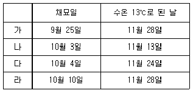

수산양식기사 (2021-03-07 기출문제)
1과목: 어류양식학
1. 은어나 송어류의 성숙조절에 주로 이용되는 것은?
- 수온
- 광주기
- 염분
- pH
(정답률: 84%)

2. 총중량 100kg의 잉어에게 400kg의 사료를 먹여 500kg으로 성장시켰다고 하면 이 때의 사료계수는?
- 0.5
- 1.0
- 1.5
- 2.0
(정답률: 94%)
3. 협염성 어류는?
- 뱀장어
- 무지개송어
- 방어
- 숭어
(정답률: 68%)
4. 1m2당 무지개송어의 치어의 적정방양밀도는? (단, 수온 15℃, 개체 당 무게는 4g 내외임)
- 300 ~ 400마리
- 400 ~ 600마리
- 600 ~ 900마리
- 900 ~ 1300마리
(정답률: 62%)
5. 산소보충을 하지 않은 상태에서 정수식 못양식으로 잉어를 양성하려고 한다. 물을 교환하지 않은 상태에서의 잉어의 최대 수용량은?
- 1m2 당 약 500g
- 1m2 당 약 100g
- 1m2 당 약 1000g
- 1m2 당 약 1500g
(정답률: 77%)
6. 생식세포인 정자와 난자는 일반적으로 몇 배수체인가?
- 반수체
- 2배체
- 3배체
- 4배체
(정답률: 84%)
7. 조피볼락 출산 후 자어에게 먹이를 처음 공급하는 시기는?
- 출산 직후
- 출산 50일 후
- 출산 19일 후
- 출산 30일 후
(정답률: 92%)
8. 먹이생물이 갖추어야 할 조건이 아닌 것은?
- 적정한 크기 및 모양을 갖추어야 한다.
- 영양 성분이 확보되어야 한다.
- 대량 배양이 용이해야 한다.
- 빠른 운동성을 가져야 한다.
(정답률: 97%)
9. 산란 유도를 위해 사용하는 호르몬과 관련이 없는 것은?
- 뇌하수체
- HCG
- 클로로포름
- 고나도트로핀
(정답률: 79%)
10. 방양된 잉어 치어의 해적생물이 아닌 것은?
- 메기
- 베스
- 백련
- 물새
(정답률: 84%)
11. 어류 양식용 배합사료 성분 중 고려되어야 할 주요 영양소는?
- 단백질 - 지질 - 탄수화물 - 항산화제
- 단백질 - 지질 - 탄수화물 - 무기질
- 점착제 - 지질 - 탄수화물 - 무기질
- 점착제 - 지질 - 탄수화물 - 항산화제
(정답률: 86%)
12. 크럼블(crumble) 사료에 대한 내용으로 가장 적합한 것은?
- 생사료를 주원료료 하여 공급직전 제조한다.
- 주로 치어에 주는 사료이다.
- 출하직전 맛을 좋게 하기 위하여 주는 사료이다.
- 보통 직경 3, 5, 7mm의 3가지로 생산된다.
(정답률: 80%)
13. 틸라피아가 우리나라에 처음 도입된 년도와 수입국은?
- 1965년, 일본
- 1955년, 태국
- 1958년, 대만
- 1968년, 중국
(정답률: 78%)
14. 식성이 다른 어류는?
- 넙치
- 방어
- 숭어
- 자주복
(정답률: 73%)
15. 부화 후 5 ~ 6일이 지난 참돔 자어의 초기 먹이로 가장 적합한 것은?
- 로티퍼
- 성게유생
- 굴 D상 유생
- 코페코다 노플리우스 유생
(정답률: 53%)
16. 은연어의 사육 적정 수온은?
- 8 ~ 10℃
- 10 ~ 12℃
- 13 ~ 18℃
- 20 ~ 22℃
(정답률: 81%)
17. 은어의 부화 직후 사육밀도는 수량 1m3당 몇 마리인가?
- 5000 ~ 10000 마리
- 10000 ~ 30000 마리
- 30000 ~ 50000 마리
- 150000 ~ 200000 마리
(정답률: 66%)
18. 수온 15 ~ 26℃에서 넙치 성어 양성 시 환수율이 하루에 10 ~ 12회전일 때 m2당 양성밀도로 가장 적합한 것은?
- 1 ~ 5kg
- 5 ~ 15kg
- 20 ~ 30kg
- 30 ~ 40kg
(정답률: 86%)
19. 넙치양식의 자어 관리에 대한 설명으로 틀린 것은?
- 자어가 난황을 흡수하고 입이 열리면 즉시 사육조로 옮긴다.
- 자어의 수용 밀도는 해수 1000L 당 20000마리 전후이다.
- 광선량은 10000lx 이내로 한다.
- 사료는 부화초기에는 로티퍼를 주고 후기에는 알테미아를 준다.
(정답률: 69%)
20. 미꾸라지의 성어 양성 시 적당한 방양밀도는?
- 100m2 당 5 ~ 9kg
- 100m2 당 10 ~ 15kg
- 100m2 당 16 ~ 20kg
- 100m2 당 21 ~ 25kg
(정답률: 86%)
2과목: 무척추동물양식학
21. 참가리비의 자원보호를 위해 채취금지기간을 설정한다면 가장 알맞은 시기는?
- 3 ~ 5월
- 6 ~ 8월
- 9 ~ 12월
- 1 ~ 3월
(정답률: 59%)
22. 대합류의 종묘생산을 위한 자연채묘방법으로 알맞은 것은?
- 수하식 채묘
- 침설고정식 채묘
- 완류식 채묘
- 로프식 채묘
(정답률: 76%)
23. 참굴 종패의 단련 목적이 아닌 것은?
- 성장억제 및 저항력 강화
- 취급 시 탈락방지 및 양성 시 폐사율의 감소
- 양성 시 부착 및 식해 생물의 피해 감소
- 양성 시 성장속도의 증가
(정답률: 62%)
24. 기수(沂水)의 염분 범위는?
- 0.5 psu 이하
- 0.5 ~ 25 psu
- 10 ~ 20 psu
- 40 ~ 25 psu
(정답률: 83%)
25. 문어 종묘에 대한 설명으로 틀린 것은?
- 수온이 14℃ 이하가 되면 성장이 현저히 늦어진다.
- 성장이 빠른 시기에 선도가 높은 먹이를 충분히 공급하면 성장이 빨라진다.
- 종묘가 성장할수록 일간성장속도가 빨라진다.
- 종묘는 큰 것일수록 수확시기가 빨라진다.
(정답률: 68%)
26. 먹이생물인 클로렐라(Chlorella)가 속하는 분류군은?
- 녹조류
- 갈조류
- 남조류
- 홍조류
(정답률: 90%)
27. 전복 해상가두리(2.4×2.4×2.5m)의 m2당 종묘(각장 2~3㎝)의 최초 입식 밀도는?
- 500마리
- 1000마리
- 3000마리
- 5000마리
(정답률: 60%)
28. 우리나라에서 닭새우의 주산지는?
- 제주도 연안
- 거제도 연안
- 울릉도 연안
- 연평도 연안
(정답률: 81%)
29. 양식생물의 식성에 따른 주요 먹이의 종류가 틀린 것은?
- 멍게(우렁쉥이)류: 식물플랑크톤, 유기쇄설물
- 고막류: 유기쇄설물, 소형식물플랑크톤
- 전복류: 부착규조류, 대형해조류
- 해삼류: 소형 새우나 어류
(정답률: 87%)
30. 전복의 인공종묘 생산 시 사용되는 산란자극법과 가장 거리가 먼 것은?
- 간출자극
- 자외선조사자극
- 전조개류
- 과산화수소자극
(정답률: 75%)
31. 조개류의 비만도(condition index)를 가장 잘 설명한 것은?
- 각내 용적분의 연체부 건조 중량에 1000을 곱한 값
- 각내 용적분의 연체부 생식소 중량에 1000을 곱한 값
- 각내 용적분의 패각 중량에 1000을 곱한 값
- 각내 용적분의 연체부 글리코겐 축적량에 1000을 곱한 값
(정답률: 83%)
32. 전복류의 산란생태에 관한 설명으로 옳은 것은?
- 생식소가 성숙하면 난소는 담황색 또는 황백색을 띠고 정소는 짙은 녹색을 띤다.
- 까막전복은 수온이 16 ~ 17℃인 경우 수정 후 27 ~ 28시간이 지나면 패각이 생겨 저서포복생활로 들어간다.
- 참전복의 성숙 기초 수온은 7.6℃이고, 적산수온이 500 ~ 1500℃이면 성숙기에 들어간다.
- 참전복은 저위도 수역보다 고위도 수역에서 부화 후 성장이 빠르다.
(정답률: 75%)
33. 참가리비에 대한 설명으로 옳은 것은?
- 참가리비의 산란임계 온도는 15℃이다.
- 성숙한 생식소는 암컷이 황백색, 수컷이 유백색이다.
- 한류계로서 부유유생 기간이 7일 정도이다.
- 우리나라 동해안에 주로 분포하며, 수심이 20 ~ 25m 되는 곳에 많이 서식한다.
(정답률: 68%)
34. 생식방법이 다른 굴은?
- 참굴
- 강굴
- 바윗굴
- 벗굴
(정답률: 82%)
35. 굴의 고정식 채묘 방법에 속하는 것은?
- 말목식 채묘
- 뗏목식 채묘
- 연승수하식 채묘
- 부동식 채묘
(정답률: 64%)
36. 진주담치의 학명은?
- Mytilus coruscus
- Crenamytilus grayanus
- Scapharca subcrenata
- Mytilus edulis
(정답률: 69%)
37. 피조개의 D상 유생과 보리새우 조에아 유생의 공통점은?
- 저서생활을 시작한다.
- 발과 안점이 발달한다.
- 부화 후 처음으로 먹이를 먹는다.
- 난에서 부화한 직후의 유생기이다.
(정답률: 76%)
38. 수심이 20m 되는 곳에서 참가리비를 채묘할 때 가장 알맞은 채묘수층은?
- 수면으로터 6m 깊이까지
- 중층으로부터 저층부근까지
- 저층으로부터 2m까지
- 중층 부근
(정답률: 70%)
39. 바지락 양식에 관한 설명으로 틀린 것은?
- 유생의 착저 시 모래 등에 아주 작은 족사를 이용하여 부착 후 잠입생활에 들어간다.
- 채묘는 잠입생활 직전 부착기질에 부착시켜 채묘한다.
- 석시법은 간출된 다음 종묘를 방양하는 것을 말한다.
- 치패가 많이 발생하는 곳은 육수의 영향을 받는 간석지를 중심으로 한 수역이다.
(정답률: 44%)
40. 개량조개의 발생에 가장 적당한 수온 범위는?
- 22 ~ 28℃
- 10 ~ 25℃
- 15 ~ 20℃
- 5 ~ 15℃
(정답률: 57%)
3과목: 해조류양식학
41. 김이 생육하는데 필요한 원소 중 결핍되기 쉬운 원소가 아닌 것은?
- 질소
- 인
- 철
- 칼륨
(정답률: 57%)
42. 김이 생리적으로 약해지는 요인이 아닌 것은?
- 대조 때 조류 소통이 좋다.
- 겨울에 수온이 높아져 해수의 대류가 잘 안된다.
- 소조 때에 물이 맑아서 갑작스럽게 광선이 강해진다.
- 채묘가 농밀하게 되거나 김발이 밀식된다.
(정답률: 80%)
43. 김의 실내 채묘 시 조도의 관계가 가장 큰 것은?
- 포자의 부착력과 관계가 있다.
- 포자의 방출량과 관계가 있다.
- 착생 후 발아율과 관계가 있다.
- 착생 후 생장율과 관계가 있다.
(정답률: 47%)
44. 카라기난의 원료가 되는 해조가 주는 속하는 식물군은?
- 홍조식물
- 남조식물
- 녹조식물
- 갈조식물
(정답률: 85%)
45. 참김과 둥근돌김의 분류상 가장 주된 차이점은?
- 자웅성
- 생식세포의 분할방식
- 생활사
- 가장자리의 톱니 유무
(정답률: 73%)
46. 북방형 미역의 특징이 아닌 것은?
- 포자엽의 주름 수가 많다.
- 우상엽의 열각이 깊다.
- 줄기가 짧다.
- 주로 외양역에 서식한다.
(정답률: 78%)
47. 몸 가장자리가 톱니 모양으로 된 것은?
- 둥근김
- 방사무늬김
- 긴잎돌김
- 둥근돌김
(정답률: 71%)
48. 김 자연채묘(건홍)의 적기는?
- 수온 12℃ ~ 15℃가 되는 대조 시
- 수온 22℃ 전·후에서 15℃로 하강하는 대조 시
- 수온 15℃ 이하에서 5℃ ~ 8℃까지의 기간
- 수온 10℃ 전·후의 겨울철
(정답률: 62%)
49. 다음 중 절단한 꼬시래기의 모조를 살포하여 부유하면서 성장하기에 가장 적합한 양식적지는?
- 기수호나 타이드 풀
- 조간대의 모래밭
- 조간대의 자갈밭
- 하구 부근의 기수구역
(정답률: 56%)
50. 김 양식 방법 중 2차아(芽)의 부착이 적은 것은?
- 뜬흘림발(부류식)
- 떼발(염홍)
- 뜬발(부동식)
- 섶(일본홍)
(정답률: 76%)
51. 미역의 종묘생산에 있어 가이식의 필요성에 해당되지 않는 것은?
- 아포체가 육안적인 크기로 될 때까지는 가이식한 것이 본 양성 시설을 한 것보다 성장이 빠르다.
- 부니와 잡생물의 제거 작업 또는 싹녹음 예방을 위한 대피 작업이 용이하다.
- 배우체의 성숙과 수정은 오랫동안 계속 일어나기 때문에 배우체가 씨줄틀과 떨어져 있는 것이 좋다.
- 씨줄을 어미줄에 감는 작업을 할 때 종묘의 손상을 줄일 수 있다.
(정답률: 68%)
52. 미역종묘 배양과정에서 수온상승에 따라 가장 우선적으로 대처해야 하는 것은?
- 틀을 자주 뒤바꾸어 준다.
- 물갈이를 1주일에 2회 이상으로 한다.
- 시비를 자주하여 종묘를 튼튼하게 한다.
- 광선을 어둡게 관리한다.
(정답률: 73%)
53. 다시마의 엽장별 생육 단계에 있어 나타나는 형질 특징에 대한 설명으로 틀린 것은?
- 엽장 1 ~ 5cm에서는 미역과 매우 비슷하게 열각이나 주름이 없다.
- 엽장 10 ~ 20cm에서는 양 가장자리에 주름이 조금 생기고 용무늬가 나타난다.
- 엽장 2 ~ 2.5m에서는 주름이 없어지고 끝녹음이 멈춘다.
- 엽장 3 ~ 3.5m에서는 포자낭반이 나타난다.
(정답률: 62%)
54. 미역 생활사의 순서로 맞는 것은?
- 포자엽 → 유주자 → ♀,♂배우자 → 접합자 → 아포체 → 유엽
- 포자엽 → 유주자 → 접합자 → ♀,♂배우자 → 아포체 → 유엽
- 유주자 → 포자체 → ♀,♂배우자 → 접합자 → 아포체 → 유엽
- 유주자 → ♀,♂배우자 → 유엽체 → 접합자 → 아포체 → 포자
(정답률: 68%)
55. 다음 중 미역의 어미줄로 가장 많이 쓰이는 것은?
- 나일론
- 사란
- 폴리에틸렌
- 실크
(정답률: 83%)
56. 다음 중 김의 냉동씨발을 입고할 때의 함수율로 가장 적정한 것은?
- 10% ~ 15%
- 20% ~ 40%
- 40% ~ 60%
- 0% ~ 10%
(정답률: 83%)
57. 다음 표는 김의 채묘 일자와 수온이 13℃로 된 날을 기록한 것이다. 가장 흉작이 예상되는 것은?

- 가
- 나
- 다
- 라
(정답률: 80%)
58. 톳의 생식세포 방출과 수정에 관한 설명으로 틀린 것은?
- 난이 방출되는 시각은 주간의 간조 때에 시작된다.
- 정자 방출은 광선과 아무 상관이 없으나 난의 방출은 광선이 없으면 방출하지 않는다.
- 난은 방출되면 점질에 싸인 채로 모체의 생식기 가지에 붙어 있으면서 수정을 한다.
- 난과 정자가 방출되는 수온 범위는 19 ~ 20℃가 되는 5월 하순경부터 시작된다.
(정답률: 75%)
59. 모자반 양식시 가이식의 조건으로 가장 적합한 것은?
- 수온 : 13℃ ~ 17℃, 수심 : 1.5m
- 수온 : 18℃ ~ 24℃, 수심 : 0.5m
- 수온 : 8℃ ~ 10℃, 수심 : 1.5m
- 수온 : 20℃ ~ 26℃, 수심 : 0.5m
(정답률: 55%)
60. 다시마의 종묘 배양과정에서 배우체의 수정률이 가장 좋은 조도는? (단, 수온은 13℃ 전후일 경우)
- 500lx
- 2000lx
- 3000lx
- 5000lx
(정답률: 61%)
4과목: 양식장환경
61. 다음 중 수질을 가장 많이 오염시키는 경우는?
- 100g짜리 10마리를 수용했을 때
- 50g짜리 20마리를 수용했을 때
- 10g짜리 100마리를 수용했을 때
- 5g짜리 200마리를 수용했을 때
(정답률: 84%)
62. 양어지의 환경을 개선하기 위하여 경운(바닥갈이)을 할 경우 기대되는 효과는?
- 산소 공급의 억제
- 유해생물의 증가
- 저질의 환원을 촉진
- 호기성 분해의 촉진
(정답률: 52%)
63. 양식 시설 재료 중 성질이 다른 것은?
- 코르타르
- 주철
- 알루미늄
- 시멘트
(정답률: 46%)
64. 고속모래여과(Rapid Sand Filter)의 설명 중 옳은 것은?
- 생물학적 여과방법이다.
- 가압펌프를 이용하는 여과장치이다.
- 중력에 의한 모래 여과장치이다.
- 용존물질을 제거하는 것이 1차적인 목적이다.
(정답률: 60%)
65. 탈질과정(denitrification)에 대한 설명으로 틀린 것은?
- 질산화 과정에 발생한 질산염을 제거하는 공정이다.
- 타가영양 세균인 슈도모나스(Pseudomonas) 등의 활동으로 이루어진다.
- 탈질과정을 통해 H2와 H2O가 생성된다.
- 용존산소량이 무산소에서 1.0mg/L로 증가하면 탈질효율은 증가한다.
(정답률: 57%)
66. 일반적으로 담수순환여과시스템에서 새로 설치한 여과조의 질산화세균이 번식하여 여과기능을 나타내기 시작하는데 걸리는 시간은? (단, 수온은 15℃ 이상임)
- 약 1주일
- 약 2주일
- 약 1달
- 약 2달
(정답률: 59%)
67. 질산화과정에 관여하는 질산화세균의 특징으로 옳은 것은?
- 종속영양세균 - 호기성세균
- 독립영양세균 - 호기성세균
- 종속영양세균 - 혐기성세균
- 독립영양세균 - 혐기성세균
(정답률: 70%)
68. 양식장 내 양수고가 3.5m 이하이고 배관 지름 300mm 이상의 경우 가장 적합한 펌프 형식은?
- 원심력 펌프
- 축류펌프
- 사류펌프
- 왕복펌프
(정답률: 63%)
69. 수중 이산화탄소와 용존산소 농도에 대한 설명으로 틀린 것은?
- 지수식 못 양식장 내 이산화탄소와 용존산소 농도의 하루 중 변화는 비례적 관계이다.
- 수중 이산화탄소 농도는 사육생물의 호흡에 의해 증가한다.
- 용존산소 포화농도는 염분에 반비례한다.
- 이산화탄소 농도의 증가는 사육수의 산성화를 초래한다.
(정답률: 65%)
70. 다음 중 과망간산 칼륨법과 중크롬산칼륨법으로 측정하는 것은?
- BOD
- COD
- 염소이온농도
- 경도
(정답률: 55%)
71. 일반적으로 물 속에 녹아 있는 산소의 양은 공기 중의 산소량에 비해 얼마 정도인가?
- 약 1/3000
- 약 1/300
- 약 1/30
- 약 1/3
(정답률: 64%)
72. 옆 물길이 필요한 양어장은?
- 저수지 양어
- 방류재포 양어
- 순환여과식 양어
- 가두리식 양어
(정답률: 80%)
73. 굴양식장의 수질 환경요인 중 부적합한 조건은?
- 화학적 산소 요구량 2ppm 이하인 수질
- 용존산소 포화율 85% 이상의 수질
- 부유물질량 25ppm 이하의 수질
- 수소이온 농도 5.0 ~ 6.0인 수질
(정답률: 75%)
74. 양식장의 입지 조건에 대한 분류상 지형적 입지 조건에 해당하지 않는 것은?
- 연안 및 해저 지형
- 교통
- 저질
- 강의 유무
(정답률: 67%)
75. 오존 발생기를 이용한 오존 소독에 관한 내용으로 가장 적절한 것은?
- 수중현탁물질이 많을수록 효능이 크다.
- 오존처리는 유기물을 분해하는 데는 효과가 없다.
- 오존처리는 사육조 안에서 시행해야 한다.
- 오존이 남아 있으면 사육 중의 어류나 무척추동물에 해를 끼친다.
(정답률: 79%)
76. 다음 중 pH를 측정하는 가장 실용적이고 정확한 방법은?
- pH 메터에 의한 전극 측정법
- pH 지시용액에 의한 비색 측정법
- 아카누마 비중계에 의한 측정법
- 네슬러 발색법에 의한 특정법
(정답률: 78%)
77. 양어장의 수질 문제에 큰 비중을 차지하는 암모니아는 다음 어느 것에서 유래하는가?
- 단백질
- 탄수화물
- 지방
- 비타민
(정답률: 84%)
78. 순환여과식 양식장의 고형 오물제거 시설로 침전조를 이용한 방법을 택했을 때, 다음 설명 중 틀린 것은?
- 사육조에서 나오는 배출수에 섞여있는 고형물 중 작은 입자는 물이 빠르게 흐르게 되는 것에서는 침전하지 않는다.
- 침전조는 클수록, 또 침전조에서 물이 머무르는 시간이 적을수록 림전이 잘된다.
- 사육조에서 나오는 물을 침전시키는 제1차 침전조는 사육조와 생물여과조 사이에 설치해야 한다.
- 침전조로 들어가는 물은 표면 가까이에서 들어가게 하고, 나가는 물도 표면 가까이에서 빠져 나가게 하면 바닥에 일단 침전된 찌꺼기가 다시 떠오르는 것을 방지할 수 있다.
(정답률: 72%)
79. 해수 유동이 김에 미치는 긍정적 영향이 아닌 것은?
- 영양염 및 이산화탄소 공급
- 김의 대사 촉진
- 대사 노폐물의 제거.
- 미세 부니의 지속적 공급
(정답률: 74%)
80. 정수식 못 양식장 등의 저질환경을 확인하기 위한 퇴적물 입도분석 시 사용할 수 있는 저질 채취기가 아닌 것은?
- 드레지
- 익스트루더
- 스미스-에킨 타이어
- 에크만 바지
(정답률: 53%)
5과목: 수산질병학
81. 뱀장어 적점병은 수온과 밀접한 관계가 있는 세균성 질병이다. 이병의 주 유행 수온은?
- 7℃
- 17℃
- 27℃
- 37℃
(정답률: 68%)
82. Vibrio anguillarum 균에 대한 설명이 옳은 것은?
- 뱀장어에만 유행한다.
- 해산어에만 유행한다.
- 담수어나 해산어 모두에 유행한다.
- 상처난 돔에만 유행한다.
(정답률: 72%)
83. 헤테로스포리스 앙귈라륨(Heterosporis anguillarum)은 어떤 어류에 기생하는가?
- 금붕어
- 메기
- 뱀장어
- 송어
(정답률: 80%)
84. 바이러스의 감염 여부를 알 수 없는 무지개송어의 종묘를 도입하여 양어지에 넣으려고 한다. 어느 곳에 넣는 것이 어병예방의 관점에서 가장 합리적인가?
- 물이 깨끗한 가장 상류의 양어지
- 물이 깨끗한 중간에 있는 양어지
- 물이 깨끗한 가장 하류의 양어지
- 물이 깨끗하다면 위치에 관계없음
(정답률: 83%)
85. 해어 종묘생산 시 육상사육시설에서 문제가 되는 Oodinium류의 관한 설명으로 틀린 것은?
- 영양형의 초기는 서양배 모양이고, 후기는 구형이다.
- 크기는 20 ~ 120㎛로 한 쪽에 부착기를 지니고 있다.
- 주로 아가미에 기생하지만 피부, 지느러미에도 기생한다.
- 성숙하면 어체의 아가미나 피부에 부착한 채로 2분열하여 증식한다.
(정답률: 57%)
86. 수서동물의 질병발생 유발 요인과 가장 거리가 먼 것은?
- 풍향의 변동
- 수온의 변동
- 강수량의 증가
- 사육수의 교환
(정답률: 82%)
87. 어류의 기생성의 편모충에 해당하지 않는 것은?
- Trypanosoma carassii
- Hexamita salmonis
- Amyloodinium ocellatum
- Brooklynella hostliis
(정답률: 49%)
88. 굴의 면반바이러스병과 관련없는 것은?
- OVVD
- DNA virus
- 각장 170㎛ 이상에서는 전혀 발생하지 않는다.
- 주감염시기는 3월에서 5월이다.
(정답률: 71%)
89. 감염성 질병이 의심되는 넙치에서 원인 병원균 혹은 바이러스를 순수하게 분리하기 위해 먼저 사용하여야 할 조직 부위는?
- 신장
- 아가미
- 난소
- 피부
(정답률: 79%)
90. 겨울철 유수식 잉어지에서 잉어의 체표, 지느러미 등에 회백색의 점액물질이 덮여있는 것이 관찰되었다면, 이 병과 발생과 관련이 가장 깊은 균은?
- Pseudomonas anguilliseptica
- Aeromonas salmonicida
- Flavobacterium columnare
- Pseudomonas fluorescens
(정답률: 52%)
91. 에드워드병의 증상이라고 볼 수 없는 것은?
- 신장이 부종을 일으키고 농이 나온다.
- 지느러미와 복부가 붉은 지느러미의 증상과 같이 붉어진다.
- 항문의 가장자리가 위축 함몰된다.
- 심한 병증의 어류는 복수가 고인다.
(정답률: 62%)
92. 김 사상체 병해인 녹변병과 황반병의 가장 큰 차이는?
- 전염성의 유무
- 광선의 불균형
- 온도의 불균형
- 조도 부족
(정답률: 79%)
93. 노출이 불충분하고 광선이 부족할 때 생기는 갯병은?
- 흰갯병
- 싹갯병
- 쪼그랑병
- 암종병
(정답률: 66%)
94. OMVD의 외부 증상으로 맞지 않는 것은?
- 안구돌출
- 체색흑화
- 복부 점상출혈
- 백색결절
(정답률: 73%)
95. 넙치에 노카르디아병이 유행되면 어떤 증상을 보이는가?
- 아가미가 유착된다.
- 간에 심한 출혈이 일어난다.
- 신장에 백색 결절이 형성된다.
- 표피에 백색 결절이 형성된다.
(정답률: 63%)
96. 은어 치어의 부레 내에 먼저 침입하여 번식하고, 차츰 전신에 감염되어 생명을 잃게 하는 병은?
- 고창증(Candida sake)
- 포마증(Phoma sp.)
- 진균성육아종증(Aphanomyces piscicida)
- 내장진균증(Saprolegnia diclina)
(정답률: 46%)
97. 방어에 감염된 연쇄구균증이 쉽게 치료되지 않는 원인은?
- 환부에 세균을 내포하는 육아종염이 생겨서
- 병원균이 혈관 내에서 포낭을 형성하여
- 환부의 세균은 쉽게 내생포자를 만들기 때문에
- 병원균이 세포 내에 기생하기 때문에
(정답률: 72%)
98. 어류가 가지고 있는 티아미나아제는 어떤 비타민 부족 현상을 야기시키는가?
- 비타민A
- 비타민B1
- 비타민B12
- 비타민C
(정답률: 73%)
99. 연쇄구균 감염에 의한 대표적 증상이 아닌 것은?
- 아가미 부식과 상피 탈락
- 안구돌출과 안구출혈
- 아가미뚜껑의 출혈
- 꼬리자루의 궤양 형성
(정답률: 54%)
100. 냉수성 어류에 유행되는 virus성 질병은 많은 어류를 폐사시키는데, 이러한 폐사를 최소한으로 감소시킬 수 있는 방법은?
- 신선한 사료를 투여한다.
- 항생물질 같은 약을 투여한다.
- pH를 일정하게 유지시킨다.
- 사육수온보다 수온을 높인다.
(정답률: 80%)